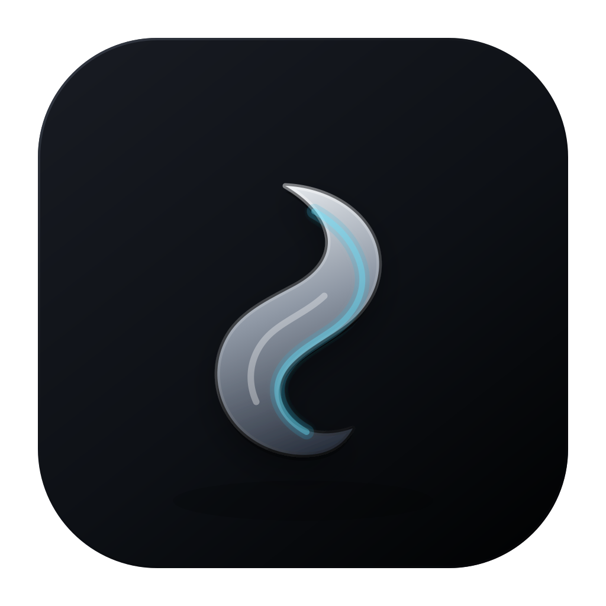

Every command, accounted for.
Command blocks keep output, status and duration together. Copy, re-run, or jump back to the command you need.

GenieTerm Download
A terminal built for life over SSH.
Keep work running. Bring your files, GPUs and services into view.
Free & open source · macOS & Linux · Windows preview
Commands with context.Output, exit status and duration, together.
Files where you work.Browse, edit, upload and download remotely.
A workspace that follows.Files and Host follow your focused terminal.
Your files, your tools, and the machine behind them.
Your machine, beyond the prompt.
Actual app components · demo data
Close the laptop. Change networks. Come back later.
Your agent, build or training run keeps working
on the host. Reconnect and catch up on what happened.
Epoch 21/50 · checkpoint saved Epoch 22/50 · training…
The process runs on atlas. GenieTerm shows its output on your laptop.
↳ Choose a step to follow the connection.
Illustrated sequence · requires the genie helper and a durable SSH session.
See CPU, memory, disks, network and every NVIDIA GPU. Follow a busy GPU to the process holding its memory—and the person running it.
Go deeper: clocks, power, bandwidth and the processes using this GPU.
Actual app components · demo dataCPU, memory, network and disks. Inspect the resource behind a slow task.
GPU utilization, memory, temperature and the processes holding each device.
Find a service, forward its port, and open it on your computer.
Start Jupyter, TensorBoard, Gradio or a dev server remotely. When its local URL appears, one click forwards the port and opens it on your computer.
Paths and tokens come along. If your local port is busy, GenieTerm finds a free one.
$ tensorboard --logdir ./runs
TensorBoard at http://localhost:6006/
Try the example. No connection is made from this page.
Find the command you need. Understand the error you got. Ask a follow-up. Then decide what goes into your shell.
Use your existing local CLI sign-in, a local model, or your own API key. Choose your engine in Settings → Command AI.
How Command AI worksFix a failed command, in context. App preview with sample data.
Find every .log file under ./runs, including subfolders.
find ./runs -type f -name '*.log'
Illustrative response. Try inserting it into the sample prompt.
Review, edit, insert or run a suggestion. Risky commands need confirmation.
Inspect the request. Recognized credentials are redacted before it leaves.
Disable Command AI globally or for an individual host.
Command blocks keep output, status and duration together. Copy, re-run, or jump back to the command you need.
Drag in a file or folder to upload. Preview and edit remotely. Download whole folders, with cancel and retry at hand.
Split blocks, arrange tabs and save workspaces. Search the command palette to open tools or connect to a saved host.
Long-running commands can notify you when they finish. Click the notification to return to the right terminal.
Free. Open source. No account required.
Apple silicon and Intel.
Updates arrive in the app.
Open the .dmg and drag GenieTerm to Applications. The app is not notarized yet. After the first launch attempt, allow it in System Settings → Privacy & Security → Open Anyway.
Ubuntu 20.04, Debian 10 and later.
AppImage updates automatically.
Use .deb for Ubuntu or Debian; it keeps Chromium's sandbox enabled. Install with
sudo apt install ./GenieTerm-linux-*.deb after downloading the one package for your
architecture. AppImage needs libfuse2 (libfuse2t64 on Ubuntu 24.04). On Ubuntu 23.10 and later, use
.deb. A .deb installation prompts you to download updates.
x64, unsigned preview builds.
Available on prerelease tags.
Windows is currently a preview platform.
v1.4.0 · Free downloads for macOS and Linux.
The helper enables durable sessions and Host. Start Quick Start from the command palette for a hands-on tour.
GenieTerm offers a small helper at ~/.genieterm/bin/genie. It enables durable sessions, shell
integration and the Host view. You can connect without it for a basic SSH terminal; helper-dependent
features require installation.
A durable SSH session keeps its process running on the remote host when your laptop sleeps, changes networks or the app restarts. On reattachment, buffered output streams back. The remote host must stay running; a host reboot or an explicitly terminated session ends its processes.
Codex and Claude Code engines use the CLI installed and signed in on your computer. Ollama and API engines use your chosen endpoint. Requests include context about the target machine, and only go to your selected engine when you ask. You can inspect the request before sending it.
The Host view supports NVIDIA GPUs. Desktop releases are available for macOS and Linux; Windows is an unsigned preview. Listening ports are not listed on Windows. Port forwards currently need to be recreated after an app restart.
Yes. GenieTerm is licensed under Apache-2.0 and began as a fork of Wave Terminal. It has no telemetry and no required GenieTerm account. Explore the source on GitHub ↗